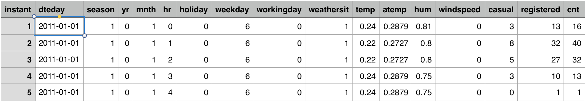

Saegus Interview Project : Predicting Bike Rentals
Overview
Many American cities have communal bike sharing stations where you can rent bicycles by the hour or day. Washington, D.C. is one of these cities. The District collects detailed data on the number of bicycles people rent by the hour and day.
Hadi Fanaee-T at the University of Porto compiled this data into a CSV file, which you’ll be working with in this project. The file contains 17380 rows, with each row representing the number of bike rentals for a single hour of a single day. You can download the data from the University of California, Irvine’s website.
Here’s what the first five rows look like: 
Here are the descriptions for the relevant columns:
instant- A unique sequential ID number for each rowdteday- The date of the rentalsseason- The season in which the rentals occurredyr- The year the rentals occurredmnth- The month the rentals occurredhr- The hour the rentals occurredholiday- Whether or not the day was a holidayweekday- The day of the week (as a number,0to7)workingday- Whether or not the day was a working dayweathersit- The weather (as a categorical variable)temp- The temperature, on a0-1scaleatemp- The adjusted temperaturehum- The humidity, on a0-1scalewindspeed- The wind speed, on a0-1scalecasual- The number of casual riders (people who hadn’t previously signed up with the bike sharing program)registered- The number of registered riders (people who had already signed up)cnt- The total number of bike rentals (casual+registered)
Instructions
Let’s say your customer want to predict the total number of bikes people rented in a given hour (cnt column ).
In this project you’ll have to provide a clear and meaningfull data analysis using data story tellings approach and statistical technics.
Have Fun!